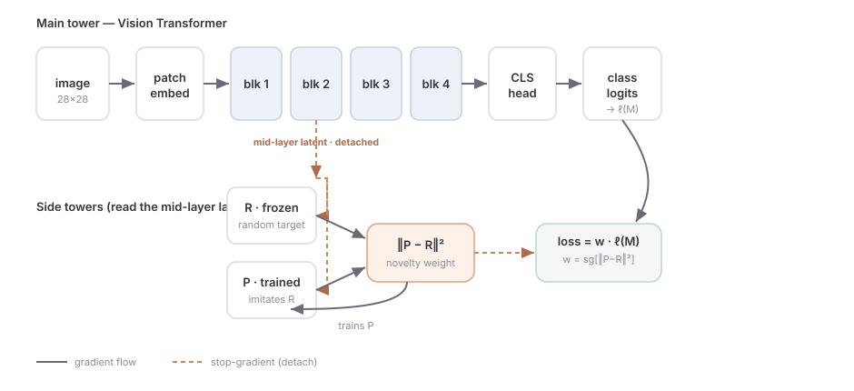

Can a network tell you which examples it has already memorized?
Here is a shower-thought that refused to leave me alone. A neural network overfits by continuing to push the loss down on examples it has already gotten right — grinding a training point from 99% confidence to 99.9% confidence, learning nothing that generalizes, just memorizing harder. If only the network could raise its hand and say "I've seen this one enough, stop wasting gradient on it", we could spend that capacity elsewhere and maybe overfit less.
The obvious objection: to know an example is "already learned" you'd compute its loss, which needs its label, and now you're just doing hard-example mining with extra steps. But what if the signal didn't need labels at all? What if a network could measure its own familiarity with an input — how many times it has effectively seen something like it — directly, cheaply, as a side effect of training?
This post is the writeup of chasing that idea. It has a clean trick at its center (a frozen random network), a deliberately rigged experiment to test it, an honest scorecard, and — because staring at high-dimensional representations is the best part — a pair of interactive UMAP explorers you can poke at. Spoiler, so you can calibrate: the familiarity signal is real and surprisingly clean, but turning it into free generalization is harder than it looks. That gap is the interesting part.
1The familiarity signal: a frozen random network
The trick comes from a 2018 RL paper, Random Network Distillation (RND), where it was used to make agents curious about novel states. It is almost suspiciously simple.
Take two small networks, both reading the same input $x$:
- $R$, a target with random weights that we freeze forever. It computes some arbitrary, fixed, nonlinear function $R(x)$. We never train it; it is just a fixed random landscape.
- $P$, a predictor that we train to imitate the target by minimizing $\lVert P(x) - R(x)\rVert^2$.
Now watch the prediction error $\lVert P(x)-R(x)\rVert^2$ as training proceeds. On inputs $P$ has seen many times, it has had ample opportunity to match $R$ there, so the error is small. On inputs that are rare or novel, $P$ has had little practice, so the error stays large. The error is a familiarity meter: low where the data is dense and well-trodden, high where it is sparse or new. And it costs nothing but a forward pass — no labels, no notion of "correct."
So here is the plan. Train a classifier $M$ as usual, but down-weight each example by how familiar it is. Familiar (memorized) examples get a small weight; novel ones keep a big one. Per minibatch, the loss is
$$\mathcal{L} \;=\; \underbrace{\tfrac1N\sum_i \lVert P_i - R_i\rVert^2}_{\text{train the predictor } P} \;+\; \underbrace{\tfrac1N\sum_i \operatorname{sg}\!\big[\lVert P_i - R_i\rVert^2\big]\cdot \ell_i(M)}_{\text{familiarity-weighted classifier loss}}$$where $\ell_i(M)$ is the classifier's per-example cross-entropy and $\operatorname{sg}[\cdot]$ is stop-gradient (PyTorch's .detach()). Three rules make this behave:
- $R$ is frozen. It is a fixed ruler; training it would move the goalposts.
- $P$ trains only through the first term. Its input is detached from $M$, so no classifier gradient leaks into the familiarity meter.
- The weight is detached. The factor multiplying $\ell_i$ is a number, not a thing to optimize — it re-weights examples without contributing gradients of its own. Crucially this is a per-example product, $\sum_i w_i\,\ell_i$, not (mean weight)·(mean loss).
One implementation note that matters: the raw $\lVert P-R\rVert^2$ shrinks globally as $P$ learns, which would quietly turn down the classifier's whole learning rate. We don't care about the absolute scale, only the relative emphasis across examples, so each minibatch normalizes the weights to mean 1. That keeps the comparison against an unweighted baseline honest — same effective learning rate, only the within-batch tilt differs.
2Where should the meter look? Not at pixels.
The first version I built fed $R$ and $P$ the raw pixels. It worked, in the sense that the error did separate common from rare inputs — but the separation tracked pixel-space density, which is only loosely related to what the classifier has actually memorized. Two MNIST sevens can be far apart in pixel space yet identical to the model; a familiarity meter on pixels can't know that.
So I moved the towers' eyes inward. They now read the classifier's own mid-network latent — the token stream halfway through the Vision Transformer, mean-pooled — detached so no gradient flows back. Now "familiarity" is measured in the representation the model actually uses to decide, and it drifts as the model learns: as $M$ reshapes its latent space, $R$'s readout of that space moves too, and $P$ chases a slowly moving target. This one change is the difference between a meter on the world and a meter on the model's experience of the world.

3A rigged-on-purpose experiment
To test "down-weight what you've memorized," I want a setting where memorization and generalization visibly diverge, and where I know the right answer in advance so I can check the trick against an oracle. Class imbalance is perfect for this.
I built a deliberately lopsided MNIST: a training pool of 10,000 images that is 91% the digit 8 (9,100 of them) and just 100 examples each of the other nine digits. The model will see eights constantly and memorize them to death, while starving on the rare digits. Then I evaluate on a perfectly balanced test set (200 of every digit) and report macro accuracy — the unweighted mean over classes — because a model that simply always shouts "8" already scores 91% by the naive metric and 10% by the honest one.
The classifier is a small from-scratch ViT (7×7 patches → 16 tokens, 4 Transformer blocks, ~139K parameters); each tower is a ~115K-parameter MLP reading the latent after block 2. No dropout, no weight decay — I want it to overfit so there is something to fix. Then I run three training regimes that differ only in how examples are weighted:
| regime | per-example weight | uses labels? |
|---|---|---|
| baseline | 1 (uniform) | — |
| normal_weight | 1/91 for eights, 1 otherwise | yes (oracle) |
| novelty-RND | detached $\lVert P-R\rVert^2$ | no |
The middle one, normal_weight, is the oracle: classic inverse-frequency balancing that uses the labels to make every class contribute equal total weight (each of the 9,100 eights is worth $1/91$ of a rare example, so the eights collectively weigh the same as one rare digit). It is what good label-based re-balancing buys you — the target our label-free trick is trying to sneak up on. The baseline is the do-nothing control. novelty-RND is the contender.
4Does the meter even fire?
Before asking whether the trick helps, the precondition: does the familiarity signal actually assign lower novelty to the over-memorized eights than to the starved rare digits? If $P$ predicts $R$ equally well everywhere, there's nothing to re-weight and the rest is moot.
It fires, and cleanly. Tracking the mean novelty separately for the majority and the rare classes, the two curves pull apart almost immediately and stay apart: by late training the rare digits carry 2.5× the novelty of the eights. The meter has, with no labels, discovered which class the model is drowning in.
5The honest scorecard
So the signal is there. Does down-weighting by it actually help us generalize? Here the story gets more nuanced — which is to say, more honest.
First, the training curves. All three regimes drive train accuracy to ~100% (this is a memorization machine by construction). On the balanced test set, the baseline climbs, peaks, and then degrades as it overfits the eights — the classic overfitting signature. The oracle normal_weight sits clearly above everyone. novelty-RND tracks just above the baseline and, notably, degrades less after the peak.
Now the per-class breakdown, which is where the trick shows its hand. Compared to the baseline, novelty-RND lifts the rare digits and gently lowers the majority — it is re-balancing in exactly the right direction, landing partway between the baseline and the labeled oracle. It is doing the right thing; it is just doing a fraction of it.
Put the numbers in one place. I report final macro accuracy (after the overfitting has happened — the fairest "did it overfit less" measure), the mean rare-class accuracy, and the majority accuracy:
| regime | final macro | rare-class acc | majority (8) acc | best macro, 3 seeds |
|---|---|---|---|---|
| baseline | 0.667 | 0.631 | 0.99 | 0.691 |
| normal_weight (oracle) | 0.707 | 0.678 | 0.965 | 0.731 |
| novelty-RND | 0.689 | 0.657 | 0.98 | 0.689 |
Read this carefully, because it's a mixed verdict and both halves matter:
- The good: at the end of training, novelty-RND beats the baseline's macro accuracy (0.689 vs 0.667) and rare-class accuracy (0.657 vs 0.631), purely from a label-free familiarity signal. It really does overfit the majority a bit less and spend more on the rare classes.
- The sobering: it recovers maybe half the gap to the labeled oracle, and when you take each method's best point across three seeds, novelty-RND is statistically indistinguishable from the baseline (0.689 vs 0.691) while the oracle is clearly ahead (0.731). The signal is real; the free lunch is small and seed-dependent.
6The fun part: a UMAP explorer
Numbers are a summary; representations are the thing. So here is the part I actually built this for — an interactive map of how these 1,500 balanced-test images lay out in the model's representation, layer by layer. Two dropdowns:
- layer sweeps from the patch embedding up through the four Transformer blocks, then into the side towers' own activations (
P:hidden1→P:out, and the frozenR). You're watching the representation sharpen — and you can literally see where the towers' world looks nothing like the classifier's. - color by recolors the same points by class label or by a low-level image statistic (brightness, ink, stroke energy…). It's a quick test of whether a cluster is "about the digit" or secretly "about the brightness."
And hover any point to see the actual image. Go find the majority blob (digit 8, outlined in black); watch it tighten into a dense island in the deeper blocks while the starved classes stay diffuse.
R tower (a frozen random map) shows no class structure at all, exactly as it should.7Does it survive a real dataset? CIFAR-100
MNIST is a toy; structure there is almost free. The honest test is a dataset where the model has to fight for its representation. So I ran the identical pipeline on CIFAR-100, with one fine class — sunflower — blown up to 90% of a 20,000-image pool and the other 99 classes sharing the scraps (~20 examples each). Bigger ViT (~0.83M parameters, 6 blocks), same three regimes, same balanced-test macro accuracy over 100 classes (where "always predict the majority" scores just 1%).
This regime is brutal — 99 classes with a couple dozen examples each — so absolute numbers are low across the board; what matters is the relative picture.
| regime | best macro | rare-class acc | majority acc |
|---|---|---|---|
| baseline | 8.9% | 7.9% | 90% |
| normal_weight (oracle) | 8.6% | 7.7% | 52% |
| novelty-RND | 8.8% | 8.0% | 86% |
This is the most instructive failure in the whole project. With ~20 images per rare class, the 99 minority classes are essentially unlearnable, so every method is pinned near the ~9% macro floor. The novelty meter fires harder than on MNIST — a 5.6× majority/rare split — yet it buys nothing, because there is no generalization to recover. Watch what re-balancing does in this regime: the labeled oracle dutifully drives loss toward the rare classes, but with nothing learnable there it mostly just throws away majority accuracy (sunflower crashes from 90% to 52%) for no macro gain. novelty-RND, gentle by construction, keeps far more of the majority (86%) and edges everyone on rare-class accuracy — but in truth it is a wash at the floor. The lesson is sharp: a strong familiarity signal is necessary but not sufficient; re-weighting can move accuracy around, it cannot conjure generalization the data does not contain.
And the same explorer, now in glorious color — try coloring by avg color or saturation and you'll often find the early layers organize by palette before they organize by category. Hover to confirm with the actual photo.
R tower again shows no class structure — its job is to be a fixed ruler, not a classifier.8What I think is going on
Here's my read after staring at all of this. The familiarity meter works — genuinely, label-free, and it lives in the right space once you point it at the model's latents instead of the pixels. You can see it fire, you can watch the majority condense into the low-novelty island, you can measure the 2.5× split. As a diagnostic for "what has this model over-memorized," I'd reach for it again.
But as a lever for generalization, it's a blunt instrument, for two reasons that I think are fundamental rather than fixable with more tuning:
- Familiarity saturates; frequency doesn't. The predictor's error bottoms out once an example is "learned enough," so the meter compresses a 91× frequency gap into a ~2.5× novelty gap. It can tell you the eights are over-represented but badly under-counts by how much — and re-balancing needs the magnitude, not just the sign.
- Down-weighting the majority is not the same as helping the minority. The oracle works because it actively re-allocates total loss mass to the rare classes. Detached novelty only ever shrinks weights; with the mean-1 normalization it tilts within a batch, but it can't manufacture the aggressive minority emphasis that inverse-frequency weighting gets for free from labels.
None of this kills the idea. It sharpens it. The version I'd build next stops treating novelty as a weight and starts treating it as a signal to act on: a curriculum that resamples toward high-novelty examples (which can over-emphasize the minority, breaking the saturation ceiling), or a calibration step that maps the saturating novelty back onto something closer to a frequency. The meter is good; the actuator is what's weak.
9Takeaways
- A frozen-random target + a chasing predictor turns "how much have I trained on inputs like this" into a cheap, label-free number. Point it at the model's mid-layer latents, not the pixels.
- In a 91%-majority MNIST it discovers the over-memorized class on its own (2.5× novelty split) and re-balances training in the right direction — final macro 0.667 → 0.689 — but lands only partway to a labeled oracle (0.707), and the gain washes out into seed noise at the per-method best.
- The same qualitative story holds on CIFAR-100. At ~20 examples per rare class the minority is essentially unlearnable, so re-balancing can't manufacture macro accuracy — the labeled oracle even hurts by over-correcting the majority (90%→52%), while the gentle novelty weighting does least harm, and the meter fires hardest of all (5.6×).
- The bottleneck is that familiarity saturates: it nails the sign of the imbalance but understates its magnitude. The next iteration should resample on the signal rather than merely scale by it.
Reproducibility. Everything is from-scratch PyTorch — a small ViT classifier, two MLP towers on its mid-layer latent, Adam, no augmentation or regularization. MNIST and CIFAR-100 are downloaded directly (no torchvision). The novelty weight is detached and mean-1 normalized per batch; $R$ is frozen; $P$ trains only on $\lVert P-R\rVert^2$. The UMAP explorers project each layer's embedding with cosine UMAP after standardization and PCA-50, and embed the original images as base64 for hover. Two companion notebooks reproduce every figure on this page.